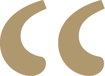

xs
sm
md
lg
xl
2xl
3xl

Having someone donate to our athletics program means empowering us athletes to reach our full potential, fostering a sense of community, and ensuring that we have the resources to excel both on and off the field.
- Austin Hubbell, Sophomore,
TXWES Baseball - First Baseman
Having someone donate to our athletics program means empowering us athletes to reach our full potential, fostering a sense of community, and ensuring that we have the resources to excel both on and off the field.
- Austin Hubbell, Sophomore,
TXWES Baseball - First Baseman